AlaskaStories.com
Stories 8...
Page contents:
Cannon: I dunno, society, maybe
Battery: curiosity
Easy Winter Trip: adventure
Gold Claims: adventure
Chitina Dip Netting: fishing
Local Forest: society
And this aint no bullshit...
Cannon
Hey - This story aint done yet, but I decided to upload it for the photos, on account as I took the pictures with my new camera. Fellow cannon sorts might like to see the pics of the cool cannon I made back in '69. Cannon people like to look at pictures of cannons. I just recently spiffied it up a bit, with new accouterments. It has a 14 inch barrel, with a 3/4 inch wide hole in the middle of it. Oh, and among the new accouterments are the two brass monkeys, the little brass trays that the stacks of cannon balls sit in. Yes, that is the brass monkey that is often referenced in relation to its balls on a cold winter day. Well, the rumor I heard is that on a really cold day the brass box would contract more than the iron balls, and therefore spill the balls over the shallow edge. There may have never been a carriage that looked like this one. I forgot to look at a picture of a cannon carriage before I made one. I fired this thing a few times back in the early days, back when black powder was 79 cents per pound, instead of $20 per pound now because the insatiably power-craving thugs in the government use every excuse to regulate and bureaucratize every human activity into unaffordability. The US government thugs crave exclusive ownership of explosives, while they bomb more villages and shoot more people, to show the world how malicious the American bullies are. If you are not laughing yourself to tears at power-damaged minds, you are missing their only show.
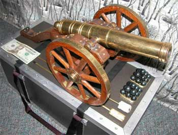
I turned the brass barrel and trunions on a lathe. They are silver soldered together. I made the carriage from Black Walnut. The axle is 3/4 inch square brass stock, turned on the ends, mostly covered with walnut. The cannon balls are 3/4 steel, heated to turn them black.Cool cannon, huh?
If you live between Alaska and Washington DC, and you notice a 3/4 inch steel ball whizzing overhead, it might be because I got some black powder, if that particular shot did not come from one of the other Alaskans. Sometimes the cannon balls fall short, but the Canadians pick them up and shoot them further along the way. International cooperation is strong in the war against the Washington DC terrorists.
The saga to get some cannon fuse is over a year old. It is more convenient to put fuse in the little vent or touch hole, than to use black powder, because powder offers no time to step back. But the stinkin, pitiably idiot feds made a rule that disallows fuse to be shipped to Alaska and Hawaii without another truck load of bureaucratic paperwork that no shipper wants to fill out for the very few fuse orders. The paperwork does not change the fuse shipping. It just gives the BATF thugs more budget excuses. The Americans will replace Rome for that analogy.
Mo on the cannon later, after I get done the things I am supposed to be working on right now...
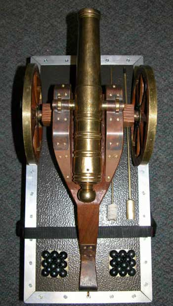
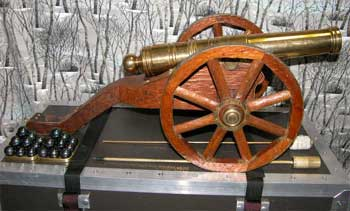
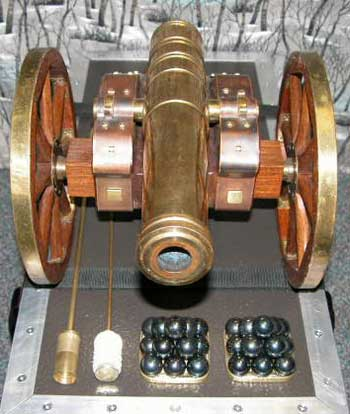
Computer Battery
I have not even finished the above story, or most everything else I am supposed to be doing, and I uploaded the following photos.
Well, another rather new $200 computer battery for my Apple Power Book laptop crapped out, so to get my money's worth in entertainment, I took my pocket knife to it. First I cut off the panel that said: Caution: Do not disassemble battery. I was tempted to use my 41 inch carbon steel medieval broadsword, or my .44 Magnum, but moderation in all things is wise. Then I gouged and pried and pulled the rest of the plastic off, just to see what cost 200 bucks under that black cover with little green lights at one end. I thought you might want to see the cheap dollar-two-ninety-eight plain old common commercial batteries with a couple 79 cent circuit boards and a few wires. This is why the computer companies got more money than we victims addicted to these over-priced tools of questionable utility. If you have wondered what is inside those battery packs, they all look similar to this one, least ways the ones I ripped apart for sport. The cost is predicated on the image of the toy it powers. Probably only one round battery in the rectangular packet of twelve went bad, as usual. Do not do this at home.
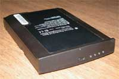
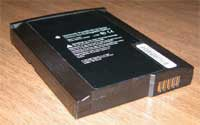
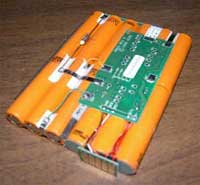
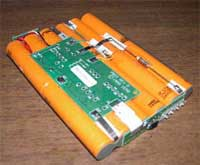
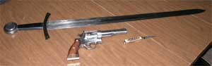
Battery disassembly tools.
An Easy Winter Trip
This is just a typical trip to an Alaska Range foothills cabin, south of Fairbanks. I forgot to get a picture of the cabin, or a picture of the inordinately fine wine and culinary artistry worthy of the view from the cabin. The story is in the photos, except for the parts about getting the snow machines stuck in deep snow so often, and other screw-ups we did not photograph.
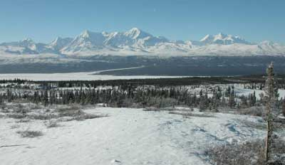
The view from one of the low ridges. The cabin is down in the trees, with the same view. Looking west over the Delta River and Richardson Highway, north side of the Alaska Range. Mt. Hayes on right, Mt. Moffit in center, then Mt. McGinnis.
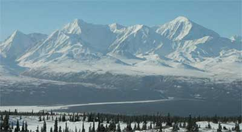
Closer view of Moffit on the right, McGinnis center left. Climbers sit in the cabin and tell potential stories about every route you can see, and some actual stories.
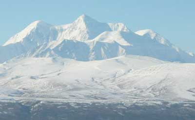
Mt. Hayes
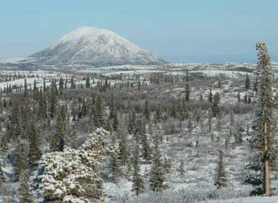
The famous Donnelly Dome. The Richardson Highway passes near the bottom on this side. The right of passage for Fairbanks climbers is to walk to the top, because it is there.
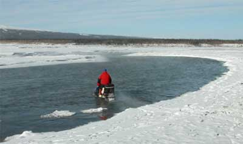
How to cross one of the braids of the Delta River. Start.
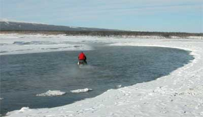
Easy on the throttle, and keep hoping, while slick rocks bump around under the track.
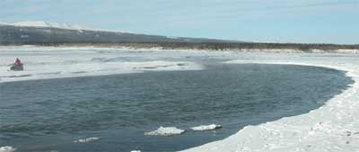
Whew.
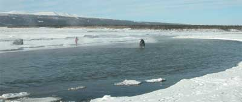
Next.
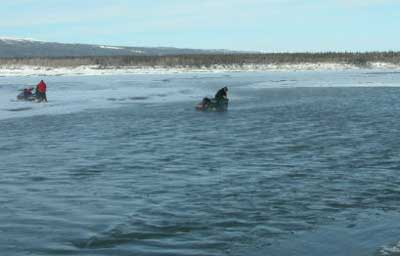
Oooops, close, but not enough hoping. 20 degrees below zero, and wet feet.
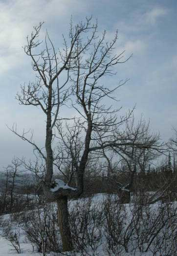
An Ent who was not content with one view of things.
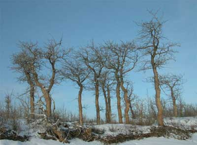
We caught this gathering of old Ents. Survivors. The other trees were little young sorts, struggling against the spring ice break-ups and floods from a glacier just upstream.
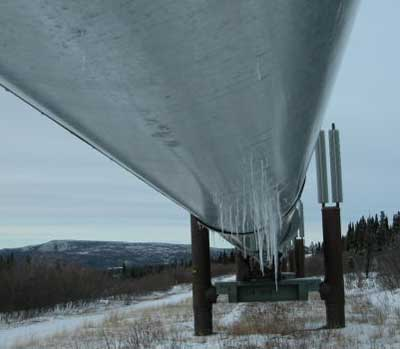
Yes, the Alaska oil pipeline leaks like a sieve. And yes, it ran out of oil years ago. They pump water through it, just to keep people fooled. It is a conspiracy. That is why the oil wars continue, on schedule.
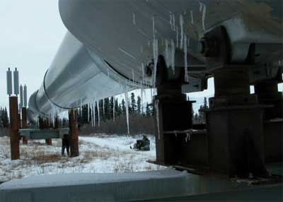
More proof.
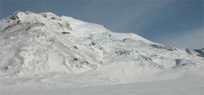
Lunch at the bottom of Mt. Silvertip, the sharp point behind the ridge in the foreground. Nice hill. Pleasant walk up through some crevasses.
That's it for the easy snow machine trip to the Alaska Range cabin. We welded one of the snow machines back together when we got back. Painted over the weld, and gave it back to the guy who loaned it to us.
Gold Claim Staking Again
There I was, mind you, and it was desperate indeed, albeit as usual. I spent all my money again, and had to get a job. Desperate.
Nice thing about Alaska is that there is gold in the hills up north. It is yours for the taking. If you repeat that old rhetorical illusion, people will keep believing it, so they go look for the stuff and pay people like me to stake their gold claims.
Okay, so this is just another typical boring Alaska gold claim staking story, not like the real adventure stories that are still in the cardboard boxes which I have not yet had time to grub through and transcribe to this screen.
Well, looking for gold, and grubbing it out of the ground, are the easy and fun parts. But the claims have to be staked. You have to walk to each corner of your claim and put in a post, at least four feet high and four inches square at the top, or some variation of similar numbers. These folks who catch the glint of gold wherever they look tend to want to stake a lot of claims around them so they can have all the gold to themselves, and no one else can get too close to their gold. And each claim is some big number of feet on each side, something like 660 feet, or 1320 feet, or something like that, depending on what sort of claim it is, and under which government bureaucracy. And the lines between the posts have to be marked, and the paperwork has to be left on the northeast post.
Well, the lines between the posts are straight lines, over or through whatever is in the way, not the comfortable game trails that go everywhere except where gold claim posts are. So placing mineral claim posts sometimes takes people where no rational person would ever go, at great difficulty and aggravation. We such people therefore sometimes see what no other person sees, some of it intriguing. Hard way to may a living, but typing these words don't pay nothing, so I gotta claw my way through the Alaska brush, over cliffs and all that, so I can afford to type these words.
Off we went, up to the far frozen north, driving the North Slope Haul Road, during the heat and dust and fires of summer. In fact the usual forest fires were burning right to the edge of the road several places. The smoke was thick. Interior Alaska is a fire ecology. The cycle of fire is mixed into the cycle of vegetation growth. The summer rain storms drift around the expansive interior Alaskan boreal forest, in random patterns that leave dry gaps between them, where lightening strikes to fire up the random patterns until the next rain storm changes the pattern. We were driving through the pattern.
We saddled up our four wheeler all terrain ATV motor horses in the Coldfoot-Wiseman area, and headed into the hills to the gold claims that needed staking.
This time we were restaking an old claim block on a remote, historic creek that had already produced no few thousand ounces of gold, starting back in 1898 or thereabouts. The old claim posts had long since rotted into the ground, and it is wise (sometimes imperative) to be able to show real claim posts if you want to really own the claims. The exact location of the creek shall remain secret so as to not embarrass the claim owners right out in full public view. Well, this is how it works. The early Alaska gold miners got all the easy gold, back when it was hard to get there. Then the next crop of gold miners got the gold that was harder to get, when it was getting easier to get there. Then the next crop of gold miners grubbed even deeper, in harder rock, but with better equipment transported on the better roads the previous miners built. And so forth. The harder it is to get, the more there is. The easier it is to get, the less there is. Each time they told fabulous gold stories to the next guy, and sold their claims to him. So now in year 2005 the gold miners are telling more gold stories and selling more gold claims, than they are grubbing for the gold that was already grubbed out. But the stories are still good because those old gold miners did not have the new high tech technology that can get those remaining pay streaks on the what's-it's-name side creeks (called pups) where the old production records indicate major concentrations of gold that were not pursued because of reason's number 37 through 337.
Some of the reasons that they pander for why the previous miners did not mine the remaining big pay streaks on the side creeks, still left for the next guy so he would buy the claims, would serve Hollywood well. Easy enough to point to their dilapidated old D-8 Cats rusting into the creeks, or grown over with alder and moss, with a few flecks of yellow paint peeling off the rust, and mention the thirty feet of overburden dirt that had to be moved to get to the bedrock pay streak, that a new D-10 Cat could easily reach for the big pay-off. You know the stories are getting thin when they tell about the gin pole that fell over and killed one of the crew, so the rest of the crew gave up, leaving all that gold. Many of the stories start out with fascinating technical analyses of gold mining technique intricacies that get so convoluted that the listener cannot figure out where the last gold ended and the next gold starts with which different angle adjustment on the sluice box in relation to the water volume and the punch plate hole diameters. "They just didn't have the right sluice box riffle design. Anyone can see that." "Size five expanded steel underlaid with Gore-Tex Astro Turf, and maybe a vibrating jig plant with some Viagra, will recover all the nuggets and 70 percent of the missed fines"
You would be highly entertained to watch old miners crawling through the rusted old junk mining equipment from the previous old miner, and listen to the reasons why said old miner missed most of the gold with that old equipment.
And we unlimbered our .44's, on account as another couple folks in Alaska had just been killed by a bear, as usual. We were in bear country, Alaska.
When the four wheeler road ended at the creek, we kept on going, mostly right up the middle of the creek, slowly, sometimes very slowly.
We reached the claim block and camp. This was not the normal tent adventure. This was a major gold camp, or had been a major gold camp in previous years. It is that for which a tourist would demand a refund, but what was so nice that we were a bit embarrassed to be afforded such luxury, in comparison with the usual tent adventure. There were mattresses on the floor in the old bunk house, and a complete roof, and the holes in the window screens had been repaired. We even had a table and chairs. The permanent camp crew of three lived even better. They had a hammock beside the main cabin, that is, until I laid in it, to discover that no one had laid in that old cotton hammock since the previous miner put it there. Ooops.
You may have recognized the reference to Coldfoot and Wiseman, on the Alaska oil pipeline route. You would recognize the wealth of old surplus pipeline construction materials that seeped back into the mining camps along that route. This was one of them.
And this were not no old compass and hip chain staking gig done the hard way. We punched the pre-set claim stake waypoints into the GPS, and followed the arrow on the screen, albeit up, down and through all those things the arrow ignored. Yes, scrambling up and stumbling down the slick moss covered rock cliffs, spitting out the mosquitoes you inhaled, and getting gouged with broken alder branches in the otherwise impenetrable thickets seething with bears laying in wait, is that for which the miner wisely pays we less wise chaps while the miner leisurely grubs for gold.
We worked from the four wheeler road at and in the creek, back and forth, stake to stake, moving up the creek. We eventually reached were the four wheelers would not go up the creek any more. Then we reached where we could not walk up the creek anymore, at vertical canyon walls with a torrent of water bouncing off both sides. And on we went, through the brush on the steep sides of the canyon, claim post after claim post. Same old stuff.
There were gyr falcons, merlin falcons, ptarmigan, ducks in the puddle ponds in the tundra, gray jays, dickey brown birds, yellow warbler sorts of birds, and so forth. We were routinely harassed by birds protecting their young. A face-off with an angry ptarmigan is why people fear the Alaska wilderness.
And there were the black bears. The first one was up above me, busy hoovering in blueberries on a steep open tundra slope mottled with clumps of brush and stunted trees. I figured as long as I was quiet, he would not notice me while I put in a claim stake. But the stake location was in an open area. I had to go get a small spruce tree, for the stake, from a small clump of trees a ways from the stake location. Well, at my first chop on the tree, the bear's perception was moose antlers in the trees. He instantly wheeled around and was barreling straight down the hill at what he thought would be moose breakfast steaks. His enthusiasm and potential ignorance was a bit disconcerting. I ascertained a full count of rounds in my .44 cylinder. He might have stopped sooner if he could hear my shouting over his own noise. When he belatedly recognized that the noise I was making was not normal for moose or anything else he would prefer to eat, he abruptly stopped, became noticeably confused, and ran back and forth trying to find the scent that the breeze would not take to him. My concern with his confusion was cutting into my staking time, but my partner across the valley was not getting ahead of me on his side because he was watching and laughing.
Well,the bear ran back up the hill a ways, and I got back to work chopping the spruce, and a couple more to make a tripod claim stake. But then the bear started sneaking back down toward me, from bush to bush, and finally sat behind a bush, comically peering out from behind it every minute or so, to try to figure out just what this was all about. Soon enough I departed, leaving him still in deep thought. The next bears, a sow with two cubs, at the next stake, were farther up the hill, and did not notice me. I made an effort to make less noise. The next black bear was in camp the next morning. It knocked over a pile of empty barrels, to assert its management prerogatives.
We were also afforded magnificent meals prepared by the camp manager who patiently tolerated her husband's gold mining pursuits. Moose steaks, blueberry pancakes and all that sort of stuff. One can find the full spectrum of Alaska gold mines run by males, from bad to worse. And then the ones deftly influenced by women are pleasant experiences.
Of course you would expect to be paid in gold instead of those worthless American paper dollars, for a gold claim staking project. But Alaska gold miners do not have any gold. It is all an illusion. They work their entire lives at real jobs, to save enough money to go gold mining, and just keep on mining until all their money is gone.
Genuine Alaska gold camps are places worthy of the effort to visit, if you do not run into a volley of rifle and pistol shots, and are willing to work more than talk. Or just stake your own claims in the next valley, and make your own gold camp. Alas, the stinking federal government drones are spending millions of your tax dollars on armed bureaucrats in helicopters, sanitizing the old Alaska gold mining camps out of existence, to erase them from history, except their illusion at the government-authorized tourist centers saturated with tax paid drones lying if their lips are moving. If you perceive that any government has ever told the truth, you are that over which commonly intelligent people laugh. Why are there any problems after all the governments said they exist to solve the problems, if their process has not already proven to be fundamentally flawed while they maintain it and keep taking your money to reward their perpetual failure? And making a new gold mine in the US is 90 percent expense for government paperwork and idiot-drills, leaving you wiser to look for gold in Russia, helping them advance their nation, and leaving the Americans to sink on schedule.
As to that matter, after restaking all the claims, surviving the attacking ptarmigan and returning to the Haul Road, we decided to look at the ludicrous new federal government Visitors Center at Coldfoot. Its construction was a recent controversy in Alaska. Look for Coldfoot Alaska on the map, north of the Yukon River, on the Haul Road, in the middle of non-descript forest with nothing to visit. Coldfoot is a privately owned truck stop, with a motel, a good cafe, gas, and less traffic than any lower 48 truck stop. But the feds own the land on the other side of the road. If anyone tries to defend any value of the federal government, start asking them questions about the federal Visitors Center at Coldfoot Alaska. One should visit it to discover just how far the federal government has sunk into its bureaucratic quagmire, and the astonishing stupidity of the people who will work for it, quite like myself when I did. When the budgetary illusion for that Visitors Center belatedly collapses, it will be used for another remote, secret prison to torture enemy combatants, such as the Alaskans who criticize the government idiots. Priced at 2 million dollars, for a Visitors Center where no commonly intelligent person would stop to visit, the actual cost was later admitted by the government to be 5 million, as usual, while the contractors said they were paid 6.7 million of your tax dollars. The building is large and lavish, with noticeably expensive landscaping and interior decor, for what is only itself, with no other purpose. At ongoing cost, it produces no benefit for tax payers.
It gets worse. It is in the center of a major gold mining region with a fascinating history of humans doing astonishing things with hand tools and horses, heavy iron and timbers, wool and winter blizzards, that which would bring modern American laborers to their knees at the description alone. So, of course, the worthless wussy government drones at the Visitor Center, lost in their flowery fields in the sky, ignore the mining history, and present painted murals of a utopian wilderness on the North Slope, an entirely different, treeless ecosystem to the north of the Brooks Range. The Center panders the "save the wilderness" government illusion that fools fools so the military industrial complex can kick aside individual human rights, those of the miners and other Alaskans, to secure lower 48 corporate government control of mineral and oil wealth. Individual tax payers do not like to pay for the incessant wars started by mental midget presidents, but government crony corporations which are handed large mineral and oil reserves, pay taxes on command, after getting their money from the tax inflated prices they charge you. The Visitor Center staff of rangers, variously of Park Service, BLM and such bureaucracies, are laughably clueless or the real world outside government, hired because they are too stupid and timid to ask questions of the lies they are told by their superiors. They are perfect examples of the dutifully dumbed down America. They could read these words, and still not comprehend the concept of asking any questions of their superiors. Fortunately the Coldfoot secret future federal prison is still behind the trees, not in sight of the Haul Road, but no doubt the government will pay some "save the wilderness" bureaucrats to slash the forest and erect more ugly signs to pander the illusion that their 6.7 million dollar Propaganda Center is a popular attraction.
At this time in history, the current product of the Alaska gold mines is the old antique mining equipment. The malicious BLM, Park Service and other armed government thugs with helicopters are stealing the antiques, where the miners are not present with enough guns to fend off the government swine. The pictures below are of a classic old churn drill, at a classic old Alaska gold camp. It was used to drill holes in the ground to get rock samples for analyses of gold content. It is a hammer type drill. The motor pulls the drill stem up when the rope is held taught on the pulley. The drill stem is then dropped to hit the bottom of the hole, making dust from rock and hard packed dirt. And the cycle is repeated. Then water is poured in the hole, and the slurry pumped out, to be panned to see if there is any gold down there. The greatest concentration of gold is usually laying on bedrock, or close to it. It is easier to drill a small hole down to it, rather than digging a large hole, to find out if there is enough gold to remove all the overburden for the area.
This antique Fairbanks Drill Company churn drill, with Serial Number 32, is for sale, for a very reasonable price. You may inquire. It is a superlative piece of Alaska gold mining history that would accent any landscape decor. It was the primary drill for many years at an Alaska gold mine on a remote, famous creek that produced a lot of gold. Some of the wood may need to be replaced (with similar old boards which are available). More photos are available. The greater cost will be getting it out of the hills, back to Fairbanks, and to wherever anyone wants it. The full story comes with the drill.
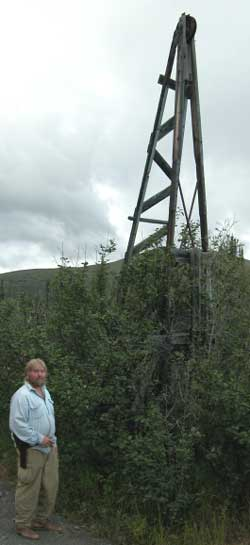
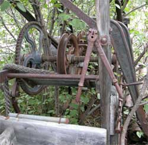
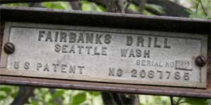
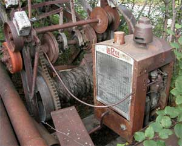
A typical old D-4 Cat and P&H Crane (drag line) rusting into a typical old Alaska gold mining area. The P&H is rumored to have come from the Panama Canal construction project.
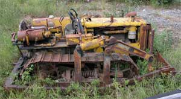
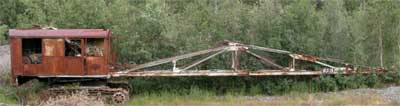
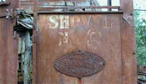
The Perils at Chitina
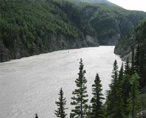
There we were, mind you, and it was desperate indeed, albeit as usual. We are still not sure who among us survived. We were getting gaunt. The bottom of the larder was bare and dry. The famous Copper River Reds were running in the Copper River. We unlimbered the dip nets.Chitina dip netting involves standing next to the river with a long-handled net in the water, waiting for a salmon to swim into the net. Easy. And sometimes you get to sit down, if you pick the secret fishing spot.
It don't get more boring than this, but that is preferable to the alternative in the Chitina canyon of the Copper River. It is a big river, with an impressive volume of glacier water rushing past vertical rock walls. The eddies and swirls and frighteningly roiling currents are frightening and roiling. If it gets exciting, it is because you fell in, are wet, cold, and on a fast trip past a lot of rock cliff, with little hope of surviving. The massive eddy on the right side below the canyon will get anyone who gets past the other eddies. Boredom is sometimes welcome.
The huge government sign stated in bold red letters that the road was closed, with passage prohibited, unlawful, extremely dangerous and could result in serious injury and DEATH. A few people watched us drive past the sign, through the creek, and up the steep hill to the Copper River Road past O'Brien Creek. The sign scares the timid, primarily those who are too ignorant to realize that the government dolts are lying approximately 100 percent of the time, sometimes more.
The road, a public right of way, was the temporary construction road for the old abandoned railroad that was used to haul the copper ore from the McCarthy Mine, down the river to the coast. Remnants of the many heavy beam railroad trestles crossing the side creeks, and perched beside the vertical cliffs, stand among the trees or lay among the brush and rocks. If you ever wondered if there is a real cliff road like you see in the comic books, the road that is carved out of the cliff above the raging river far below, zig zagging in and out around vertical cliffs, there is. This is it. Check it out sometime, but prepare your mind. And do not discuss earthquakes.
No one on the road is bold. The rock is slippery schist, all sloping downward toward the river, and crumbling. Everyone is wisely cautious, driving slow, politely, and thinking good thoughts, especially on the corners around the buttresses. The view to the raging river below cannot be avoided. Practice
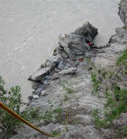
clenching your teeth. Some people whistle.Dip netting for salmon on the Copper River, by Chitina, is a popular thing in Alaska. It is one of the remnant freedoms that is passionately hated by the government swine and their corporate cronies. The common peasants can efficiently get high quality food for the freezer, without paying the government all manner and layers of taxes charged for the other ways to get food. The government refuses to maintain the public road used for Chitina dip netting. The multi-millionaire Alaska Native Corporations, awash in oil tax money slipped to the Corporations and their countless "non-profit" bureaucracies, by the legislators they own, attempt all manner of threats and legalistic ploys to stop the common people from getting the salmon that the government's heavily taxed corporations could otherwise catch, then sell back to the people at tax inflated prices. If you are not laughing robustly at what happens to human minds which become victims of foolishly accepting power, your are missing the only show those mud-hole swine know how to stage. Of course I apologize for slighting the good character of farmyard pigs by equating them to the repugnant government thugs and their pocket corporate cronies.
Our jaw muscles became tired from clenching our teeth at too many places which were too unnerving to describe, including the places where the road in front of us dropped down so steep we could not see it over the hood. We finally pulled over, a few inches, at a wide spot on the road, just wide enough to park a car, but not enough to get out on the down cliff side.
Depending upon the fish run, or fish swim, at the time you get there, Chitina dip netting can be a two hour adventure to catch your limit, or a four day adventure, or more. Wise people bring a tent and plan to stay. There are no tent places along the road, except on the road, at the wide places, on the rocks. Cars drive slowly past the parked cars and tents.
Two of us left Fairbanks in the evening, and got to our secret fishing spot a 1:AM. The secret fishing spot is always the one that is not occupied when you get there. If it is occupied, go to the next spot. All the spots are obvious. They are where you can park a car. They have a trail leading down over the edge, to the first tree or large bush clinging to the cliff, where you wisely tie a rope and lower yourself the rest of the way to the water, usually over a hundred feet. Or just tie the rope to your car. Set the brake. Then you usually tie yourself to the rocks where you are dip netting. If you fall in the very cold glacial water, no one will be able to save you. People die when Chitina dip netting. Stay tied in.
There are a few places that are not as desperate as described herein, where side creeks enter the river, but they are few and crowded and not as good dip netting. Of course the secret spot we picked requires a rope to get to, but has a magnificent flat place to walk around, and sit down, at water level, if high water is not washing over it.
Each spot is a bit different. You want to find a place where one or two points on the vertical cliff jut out a ways into the current, creating a back-eddy against the cliff, between or below the points, where the fish concentrate along the edge to swim with the advantage of the upstream current or back-eddy, so when you put your long
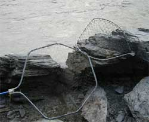
handled dip net in the water, the back-eddy current keeps the net open upstream, and the fish swim upstream into the net. It is hard work holding the net in even the most favorable current, and the currents in the roiling water irradically change. Sometimes you can tie the net off to a rock, so the rope and the current and the handle you are holding, hold the net in place, but it is still hard work handling the net. And sometimes you can sit down, and hold the net with your foot, just out from a corner of a rock where the salmon are coming around the corner. If you do not have a back-eddy, you have to dip the net in the current upstream, and sweep the net downstream to keep the net open, and hope you encounter a fish in those few seconds before you have to do that again, and again, and again.The cliffs enter the water vertically through most of the canyon. There are only so many places where a person can stand, perch or cling to the rocks at water level. And the water level changes dramatically, sometimes many feet, sometimes while you are there.
When we arrived, we debated setting up the tent, off one end of the car, and getting some sleep, but when the fish are running (swimming), a person does not want to be sleeping, because when they are not running, the next run might be a day or more away. We decided to go down and check if the fish were swimming. Mountain climbers have the advantage of fancy rope gear. We put on our harnesses, tied the rope to a tree, and lowered down the steep rock, with an ascender for a safety device. The secret spot we chose is one of the best in the canyon, with a large level area not requiring one to be tied to the cliff. Tell no one where it is.
The fish were running. There would be no sleeping. Alas, the run was sporadic, so it took 12 hours to get our limits. A long 12 hours.
The individual limit is 15 salmon, Red or Silver, with only one being a King. The normal household limit is 30 fish. This time there was a temporary limit increase of 10 fish, due to the large run. The limit of Kings is always only one per dip netter. It should be larger, for both Kings and the other salmon, but the insatiably greedy commercial fishermen, most of them from Seattle, who own most of the Alaska State legislators, and always own the State Fisheries Board appointed by their pocket governor, take over 95 percent of the Alaska salmon, and are incessantly trying to get more by reducing the sport and subsistence limit. The commercial fishermen want to catch all the
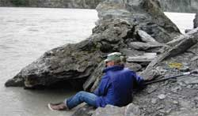
salmon and sell them back to the common Alaskans. Not many Alaskans would throw a lifeline to a sinking commercial salmon fisherman. They say they are nice guys, then their lobbyists try to cut the number of salmon common Alaskans are allowed to catch for food. They are much like the Washington DC sorts.We were dip netting and bad-mouthing government thugs, as usual, when rocks suddenly came tumbling down the overhanging rock above our heads. We scrambled, avoiding being hit by the falling rocks, and managed to not fall into the river. We shouted at whatever clumsy oafs were carelessly messing around at the edge of the road above us. There was no response. Curious, one of us climbed up the rope a ways, to discover some seagulls at the edge of the road, trying to look innocent, but snickering. The perils of Chitina dipnetting are many and varied. An open cooler, half full of food, floated by in the river. Some one upstream was probably describing the event with different words.
Small river charter boats occasionally brought dip netters down through the canyon. They turn back upstream, and carefully place their bow against the rocks where the dip netters get out. It is often a tricky maneuver. Running a boat through the canyon is not too difficult, but a bit of an adrenalin rush going back upstream amid the floating logs and snags routinely coming down the river with great force. Do not hit anything floating downstream. It will not bump aside.
You can usually feel the fish hitting the net, but not always in the strong currents. Sometimes you bring up the net with two or more salmon in it. King salmon hit the net with a significant, thunk, a lot of weight. A King in the net requires a bit more effort, especially at the precarious places. And sometimes
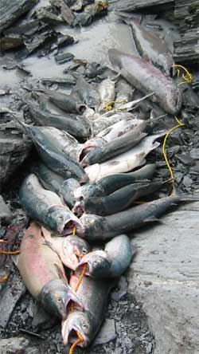
the fish get out before you get the net up. It is tiring work. Cleaning the salmon is part of it all. And hauling them back up the cliff is no small effort. Take a good pack with extra plastic sacks.You will want some ice chests, with ice. Ice is not cheap in Chitina. If you are coming from Fairbanks, you may know the spot to get glacier ice in the Alaska Range, at the cost of carrying it a short ways.
Then there is the matter of the roe, the fish eggs. Gourmet, way expensive delicacy, golden caviar. Most Alaskans pitch the eggs to the ever-present sea gulls, and make comments about devising some way to more easily prepare them, and maybe saving them next year. They taste like fish eggs, and require a lot of effort to prepare. I think I have some in the freezer from a couple years ago. Time to give them to someone who owns a dog. But when someone shows up at a party, with well-prepared golden caviar, they are appreciated.
Bald eagles are almost always in sight.
So we caught the salmon and hauled them up to the car. We very carefully turned around at the wide spot, and proceeded back along the road of fear. Some of the people who disappeared in Alaska, were last seen trying to turn around on the Copper River Canyon road.
This is how amusingly stupid the Alaska State Department of Transportation personnel display themselves, among many other never-corrected examples I may list some day. The dumbing down of America describes government personnel, as they openly display, and the career sorts who make these laughably stupid decisions hire the next crop of even dumber chaps to make the superiors look good by comparison. Part way back we encounter another huge, expensive, tax paid road sign identical to the first one, stating that the road is closed and passage is prohibited, facing the return direction we were traveling. Therefore, if we were to believe the government, and comply with the law, we would have been required to stop, and proceed no further, and be stuck there the rest of our lives. There is no outlet or entrance to the Copper River road on that side of the sign. It is a dead end road, at the million dollar bridge that failed and was never repaired. The Alaska State Government, currently under the Murkowski Family Regime of nepotists and other intellectually void drones, like the feds, are so zealously attempting to stop everyone from doing anything, under penalty of fines and jail, they even want to stop the people from getting back from where they were not allowed to go.
We survived. Of course we stopped in downtown city center Chitina, and did the usual cultural tour, which means checking the current art at Spirit Mountain Artworks. The It'll Do Cafe, didn't. Apparently it sank so much on one side that the customers slid back out the door before they could reach a table. Things change.
The salmon, served with fresh Alaska wild morels that we get more easily than getting salmon, no small amount of fine wine, and wild-assed stories too outrageous for even this website, were thereupon the order of the usual pot luck dinner functions. Those are some of the morels in the last pic.
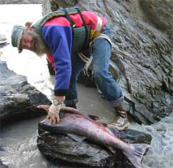
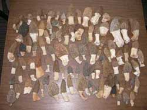
Local Forest
Fairbanks is the end of significant habitation on the road going North, for the wealthiest society of our times, so there is an interesting diversity of expressions in the area. I come upon such expressions while walking in the local forest, now and again, and therefore may add photos of such things to this section, from time to time, if I get around to it.
Apparently Buddha does not reside only in those stuffy old monasteries.
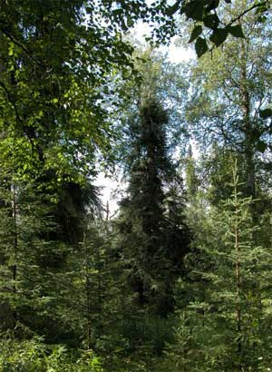
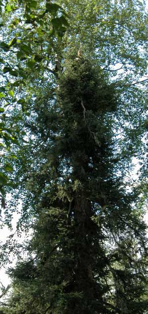
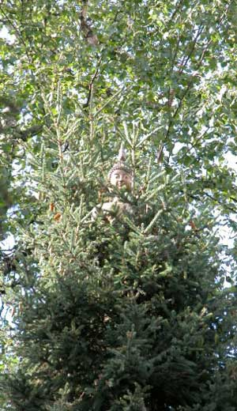
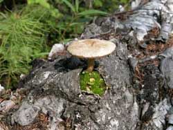
And a cute little log shroom with its own front yard.
Stories 9
Stories 10
Stories 11
Stories 12
Stories 13
Stories 14
Stories 1
Stories 2
Stories 3
Stories 4
Stories 5
Stories 6
Stories 7
Places
Concepts
Smoking
Smoke Photos
Smoke Others
Stuff
Links
Home